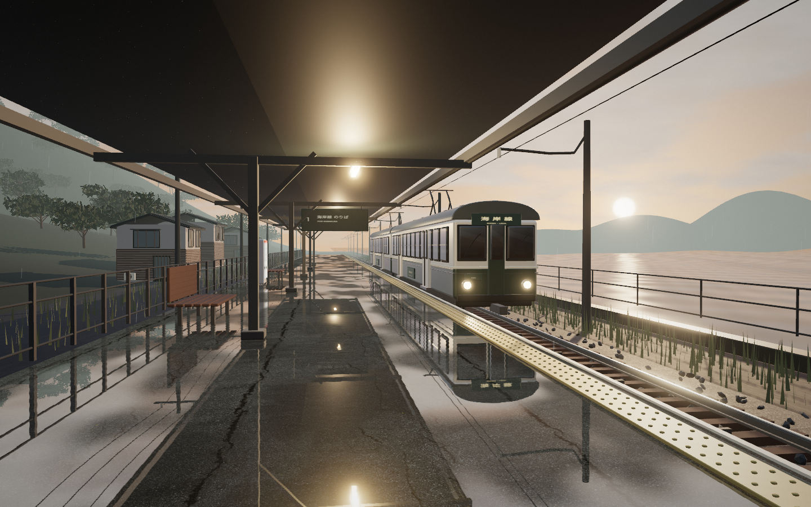
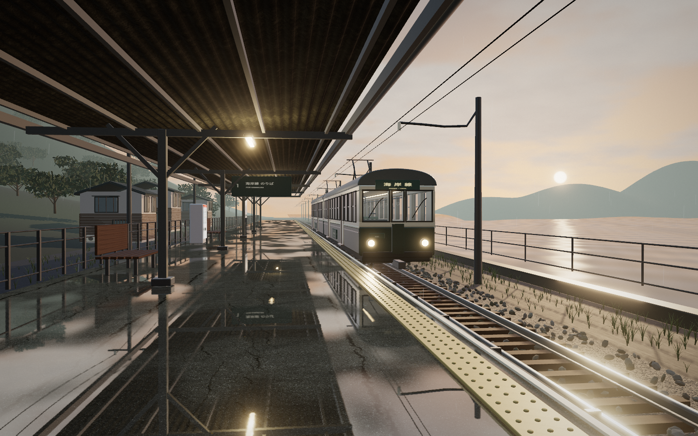

비가 머문 역 · 수정 전후
작품 열기 ↗

보완 후첫 버전첫 버전보완 후
차창 뒤의 입체 구조, 촬영한 표면 재질, 조명과 반사의 거칠기를 보완했습니다. 기본 카메라 구도도 조정했습니다. 두 이미지는 브라우저의 실제 렌더를 1440×900으로 저장한 결과입니다.


보완 후첫 버전차창 뒤의 입체 구조, 촬영한 표면 재질, 조명과 반사의 거칠기를 보완했습니다. 기본 카메라 구도도 조정했습니다. 두 이미지는 브라우저의 실제 렌더를 1440×900으로 저장한 결과입니다.